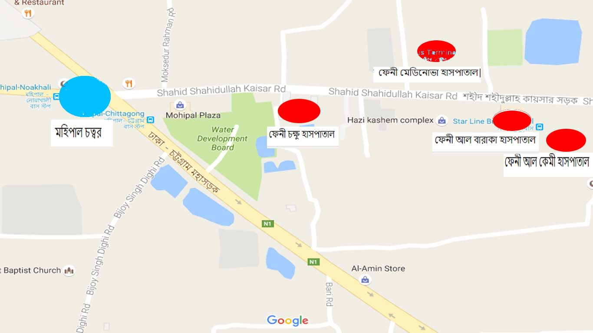

ফেনীর সকল গুরুত্বপূর্ণ হাসপাতাল এর লিংক সমূহ নিছে দেয়া আছেঃ
ফেনী চক্ষু হাসপাতাল
আল বারাকা হাসপাতাল
আলকেমী হাসপাতাল
মেডিনোভা হাসপাতাল
কন্সেপ্ট হাসপাতাল
কসমোপলিটন হাসপাতাল
মিশন হাসপাতাল
আল-আহাদ চক্ষু হাসপাতাল
শেভরণ ক্লিনিক
ডায়বেটিস হাসপাতাল
এ্যাপোলো হাসপাতাল
ফেনী সদর হাসপাতাল